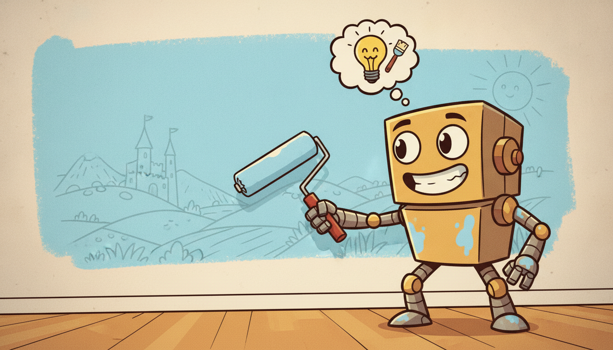
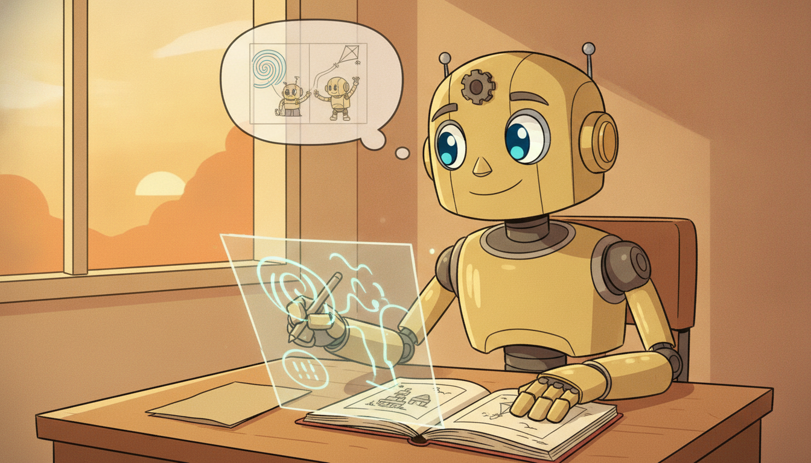

"They retrained me on the new quarter's data and I learned it beautifully. Then someone asked me about last quarter and I looked at them as though they had invented the months. I had not lost the old weights to malice. I had simply, gradient by gradient, written the new regime directly over the place the old one used to live."
A Neural Network Terrified of Forgetting Last Quarter
Train a neural network on a new task and, by default, it does not add the new knowledge to the old: it overwrites the old. The shared weights that made the model compact are exactly the weights that get repurposed for the new data, and the old behaviour is erased. This is catastrophic forgetting, and it is the central obstacle to any temporal model that must keep learning as the world changes. A forecaster facing a new market regime, a sensor model meeting a new device, a classifier shown a new fault type: each is a continual-learning problem, and each fails the same way if you simply fine-tune. This section frames the underlying stability-plasticity dilemma (a model rigid enough to remember cannot adapt, a model plastic enough to adapt cannot remember), then lays out the three families that resolve it: regularization methods that anchor important weights (Elastic Weight Consolidation and its Fisher-weighted quadratic penalty, plus SI and MAS), replay methods that interleave old data or samples from a generative model, and parameter-isolation methods that give new tasks new capacity (progressive networks, adapters). We map the formal continual-learning scenarios (task-, class-, and domain-incremental) onto temporal settings (new regimes, new series, new sensors), define the evaluation metrics that separate real continual learning from lucky fine-tuning (average accuracy, forgetting, backward and forward transfer), and finish with a worked example that trains a model on two regimes, watches it forget the first, and then repairs it with a from-scratch EWC implementation and a replay buffer, cross-checked against a clean library version. You leave able to recognize forgetting, measure it, and counter it.
In Section 20.3 we treated online learning as a stream of single updates: the model sees one example, updates, and moves on, tracking a slowly drifting target. That framing assumed the drift was gradual and that forgetting the distant past was acceptable, even desirable. This section confronts the opposite regime. Sometimes the past matters and must be retained; sometimes the change is not a gentle drift but an abrupt switch to a new task or regime that the model must learn without discarding what it already knew. A volatility model that learned the calm regime of 2017 should not become useless the moment it is updated on the turbulent regime of 2020; it should hold both. The branch of machine learning that studies how to keep learning new things while retaining old ones is continual (or lifelong) learning, and it is the natural endpoint of a chapter on learning under change. We use the unified notation of Appendix A throughout: $\boldsymbol{\theta}$ for the model parameters, $\mathcal{L}$ for a loss, $\mathcal{D}_k$ for the data of task or regime $k$.
Why does a temporal book need a section on continual learning specifically? Because temporal data is the setting where the assumption that breaks continual learning, the assumption that training data is independent and identically distributed, breaks the hardest. A time series arrives in order, its distribution shifts as regimes change (the concept drift of Section 20.2), and a deployed temporal model is almost never trained once and frozen: it is retrained as new data accrues. Every one of those retrainings is a continual-learning step in disguise, and every one of them risks erasing the model's hard-won knowledge of earlier regimes. The methods in this section are what let a temporal model accumulate competence over its operational lifetime instead of perpetually relearning and forgetting. The four competencies installed here are: to explain catastrophic forgetting and the stability-plasticity dilemma; to place any continual-learning method in one of three families and state its mechanism; to map the formal incremental scenarios onto temporal regimes, series, and sensors; and to measure forgetting and transfer with the standard metrics. These carry directly into the adaptive systems of Section 20.5.
1. Catastrophic Forgetting and the Stability-Plasticity Dilemma Beginner

Catastrophic forgetting is the empirical fact that a neural network trained sequentially on task A and then task B typically loses most of its performance on A, often dropping to near-chance, even though the very same network had ample capacity to perform both. The cause is not lack of capacity but the mechanism of gradient descent on shared weights. When you fine-tune on task B, every gradient step moves $\boldsymbol{\theta}$ to lower the task-B loss, with no term in the objective that protects the task-A loss. The weights that task A had carefully arranged are simply reused as raw material for task B, and the configuration that solved A is overwritten by the configuration that solves B. Nothing in plain backpropagation remembers that those weights were already spoken for.
This is the concrete face of a deeper tension known as the stability-plasticity dilemma. A learning system must be plastic enough to acquire new knowledge from new data, and stable enough to retain old knowledge against the interference that new learning causes. The two pull in opposite directions: a perfectly stable model (frozen weights) never forgets but also never learns anything new, while a perfectly plastic model (unconstrained fine-tuning) learns each new thing instantly and forgets the previous one just as fast. Every continual-learning method is, at bottom, a particular answer to where on this spectrum to sit and how to spend a finite budget of plasticity without spending the stability that holds the past in place.
For temporal models the stakes are concrete and constant. The world a temporal model lives in is non-stationary by definition, so the model faces a steady arrival of new regimes (a market shifting from low to high volatility), new series (a retailer adding a product line), and new sensors (a factory installing a different make of vibration probe). Each is a new "task" the model must absorb. If absorbing it erases the model's competence on the previous regimes, the model is perpetually one retraining away from uselessness, and the operational history it accumulated is thrown away every time the data shifts. Continual learning is what converts that history from a liability into an asset.
It is tempting to read catastrophic forgetting as a malfunction, but it is the expected behaviour of gradient descent on a shared parameter vector. The objective you optimize when fine-tuning on task B contains no term that mentions task A, so the optimizer has no reason to preserve A and every reason to repurpose its weights. Forgetting is what you get for free; remembering is what you must explicitly pay for. Every method in this section is a different way of writing the missing "do not destroy the old knowledge" term back into the objective, the data, or the architecture. Once you see that the loss simply does not know the past exists, the cure is obvious in shape if not in detail: make it know.
2. The Three Families: Regularization, Replay, and Parameter Isolation Intermediate

Essentially every continual-learning method belongs to one of three families, distinguished by where they add the missing protection for old knowledge: into the loss (regularization), into the data (replay), or into the architecture (parameter isolation). Understanding the three mechanisms lets you place any method, including ones invented after this book, and reason about its costs.
Regularization: anchor the important weights
Regularization methods add a penalty to the loss that discourages changing the parameters that mattered most for previous tasks. The canonical method is Elastic Weight Consolidation (EWC), introduced by Kirkpatrick and colleagues in 2017. The idea rests on a Bayesian reading: after training on task A, the posterior over parameters $p(\boldsymbol{\theta} \mid \mathcal{D}_A)$ encodes what A needs; when we then learn task B we should stay in the region of high posterior probability for A. Approximating that posterior as a Gaussian centered at the task-A optimum $\boldsymbol{\theta}_A^\star$ with precision given by the Fisher information $F$, the log-posterior becomes a quadratic penalty. The EWC objective when learning task B is
$$\mathcal{L}_{\text{EWC}}(\boldsymbol{\theta}) = \mathcal{L}_B(\boldsymbol{\theta}) + \frac{\lambda}{2} \sum_{i} F_i \,\big(\theta_i - \theta_{A,i}^\star\big)^2,$$where $\mathcal{L}_B$ is the loss on the new task, $\boldsymbol{\theta}_A^\star$ are the parameters after learning A, $\lambda$ sets the strength of the anchor, and $F_i$ is the $i$-th diagonal entry of the Fisher information matrix, estimated as the expected squared gradient of the log-likelihood at $\boldsymbol{\theta}_A^\star$:
$$F_i = \mathbb{E}_{(\mathbf{x},y)\sim\mathcal{D}_A}\!\left[\left(\frac{\partial \log p(y\mid \mathbf{x}, \boldsymbol{\theta})}{\partial \theta_i}\right)^2\right]\Bigg|_{\boldsymbol{\theta}=\boldsymbol{\theta}_A^\star}.$$The Fisher term $F_i$ is the key. It measures how sensitive the task-A loss is to each parameter: a large $F_i$ means parameter $i$ was important for A, so the penalty $F_i(\theta_i - \theta_{A,i}^\star)^2$ pins it hard near its old value; a small $F_i$ means A barely used parameter $i$, so it is left free for B to repurpose. EWC thus does not freeze the whole network (which would block all new learning); it selectively stiffens the directions A cared about while leaving the rest plastic, a direct, per-parameter resolution of the stability-plasticity dilemma. Two influential successors keep the same quadratic-penalty shape but estimate the per-parameter importance differently: Synaptic Intelligence (SI, Zenke and colleagues 2017) accumulates importance online along the training trajectory rather than from a separate Fisher pass, and Memory Aware Synapses (MAS, Aljundi and colleagues 2018) measures importance as the sensitivity of the learned function's output to each weight, an unsupervised quantity that needs no labels.
Replay: interleave the old data
Replay (rehearsal) methods sidestep the loss penalty and instead restore the missing old data. The simplest form, experience replay, keeps a small memory buffer of examples from previous tasks and mixes them into every minibatch while training on the new task, so the gradient again contains a term pulling toward old performance. The optimizer is once more reminded that the past exists, this time through data rather than a penalty. When storing raw old data is impossible (privacy, volume, or a non-stationary stream you cannot rewind), generative replay trains a generative model on each task and, when learning the next task, samples synthetic old examples from it to interleave, exactly the temporal generative models of Chapter 17 (VAEs, diffusion models, GANs over sequences) pressed into service as a compressed, replayable memory of past regimes. Replay is consistently among the strongest families empirically, at the cost of memory for the buffer or compute for the generator.
Parameter isolation: give the new task new capacity
Parameter-isolation (dynamic-architecture) methods avoid interference structurally by dedicating different parameters to different tasks. Progressive Neural Networks (Rusu and colleagues 2016) freeze the columns trained on old tasks and add a fresh column for each new task, with lateral connections that let the new column read the old features without being able to overwrite them, so old knowledge is literally untouchable. Lighter-weight variants keep a single frozen backbone and insert small trainable adapter modules per task, the same adapter idea used to specialize the foundation models of Chapter 15. Isolation gives essentially zero forgetting (the old parameters never change) but grows the model with each task and, in its pure form, needs to know which task a test input belongs to.
| Family | Where protection lives | Canonical methods | Cost | Forgetting |
|---|---|---|---|---|
| Regularization | extra penalty in the loss | EWC, SI, MAS | store importances + old optima | low, can drift with many tasks |
| Replay / rehearsal | old data in the minibatch | experience replay, generative replay (Ch 17) | memory buffer or a generator | very low, scales with buffer |
| Parameter isolation | separate weights per task | progressive nets, adapters (Ch 15) | model grows with tasks | essentially zero |
The three families look unrelated but answer the same question. Plain fine-tuning forgets because the objective has no term tying the model to the past. Regularization adds that term to the loss as a Fisher-weighted distance from the old optimum. Replay adds it to the data by reintroducing old examples (real or generated) whose gradients pull back toward old performance. Isolation adds it to the architecture by making the old parameters physically unchangeable. Choosing a family is choosing which resource you can most afford to spend: a little extra loss bookkeeping, a little memory, or a little model growth. The strongest practical systems combine families, most commonly a Fisher penalty plus a small replay buffer.
3. Continual-Learning Scenarios Mapped to Temporal Settings Intermediate
The continual-learning literature distinguishes three standard scenarios, formalized by van de Ven and Tolias, that differ in what changes between tasks and what the model is told at test time. The distinction matters because methods that look strong in the easy scenario can collapse in the hard one, and because each scenario has a direct temporal analogue.
- Task-incremental: tasks arrive in sequence and the task identity is given at test time (the model is told "this input is from task 3"). This is the easiest scenario, because a task label can route the input to task-specific parameters or output heads. Temporal analogue: a forecaster that is explicitly told which regime it is in (a known calm-versus-turbulent flag), so it may keep a head per regime.
- Domain-incremental: the task structure (the label space, the prediction target) stays the same but the input distribution shifts, and the task identity is not given. The model must perform the same job across changing domains without knowing which domain it faces. Temporal analogue: the same forecasting target measured by a new sensor with a different noise profile, or the same series entering a new regime the model is not told about, exactly the unsignalled concept drift of Section 20.2.
- Class-incremental: new classes (or new series, or new fault types) appear over time and the model must discriminate among all classes seen so far without being told which task an input belongs to. This is the hardest scenario, because the model must both learn the new classes and keep the decision boundaries against all old ones. Temporal analogue: an anomaly or activity classifier that must recognize a new fault type introduced after deployment while still detecting every previously known one.
The mapping is the practical payoff of this subsection: when a temporal system faces change, identify which scenario it is, because that fixes how hard the problem is and which methods apply. A new regime you are told about is task-incremental and nearly free; a new sensor you are not told about is domain-incremental and needs a method robust to unsignalled shift; a new fault class you must fold into a single ever-growing classifier is class-incremental and is where naive methods, and even some published ones, fail outright. The anomaly-and-change-point machinery of Chapter 8 is often what tells you a new task has begun in the first place, supplying the boundary that task-incremental methods assume is given.
Who: A reliability-engineering team running vibration-based fault classification on a fleet of industrial pumps, the sensor-and-IoT series threaded through Chapter 8 and this part.
Situation: Their deployed model classified four known fault types from accelerometer spectra. The plant then commissioned a new pump model with a different bearing geometry that exhibited a fifth fault type never seen in training.
Problem: Fine-tuning the existing model on data from the new pump taught it the fifth fault but collapsed its accuracy on the original four, which were still in active use across the older fleet. They could not afford to retrain from scratch on all data after every new machine, nor to run a separate model per pump.
Dilemma: This was a class-incremental problem (recognize all five faults, no task label at inference), the hardest scenario. Pure regularization (EWC alone) slowed forgetting but still drifted as more pump models arrived; pure isolation grew the model per pump and needed to know the pump at test time, which the unified monitoring dashboard could not supply.
Decision: They combined families: a modest replay buffer holding a class-balanced sample of spectra from every known fault, plus an EWC penalty anchoring the features the old faults depended on. New pumps contributed their faults into the same buffer and Fisher estimate.
How: Each commissioning ran a short continual-learning update that interleaved replayed old spectra with new-pump data and added the Fisher-weighted penalty of subsection two, exactly the recipe combined in the worked example below.
Result: Accuracy on the original four faults held within a couple of points of its pre-update value while the fifth fault was learned to deployment quality, and the single unified classifier kept working without a pump label at inference.
Lesson: Identify the scenario first. Recognizing this as class-incremental told the team that neither regularization nor isolation alone would suffice and that a replay buffer, the strongest family for class-incremental, had to be in the mix.
4. Evaluation: Average Accuracy, Forgetting, and Transfer Intermediate
A single end-of-training accuracy number cannot tell you whether a model is doing continual learning or merely fine-tuning successfully on the last task, so the field uses a small set of metrics computed from the full accuracy matrix $R$, where $R_{i,j}$ is the model's test accuracy on task $j$ after it has finished training on task $i$. Three quantities summarize this matrix, all defined over $T$ tasks.
Average accuracy is the mean performance over all tasks after the final task has been learned, the headline number for how much total competence survives:
$$\mathrm{ACC} = \frac{1}{T}\sum_{j=1}^{T} R_{T,j}.$$Forgetting (equivalently the negative of backward transfer) measures how much performance on each earlier task degraded from its peak by the end of training, averaging the drop over the earlier tasks:
$$\mathrm{FGT} = \frac{1}{T-1}\sum_{j=1}^{T-1}\Big(\max_{iThe discipline these metrics enforce is the whole point: a method can post a high final-task accuracy while having quietly destroyed every earlier task, and only the forgetting number exposes it. Average accuracy says how much you keep; forgetting says how much you lost; forward transfer says whether the past is helping or merely surviving. Report all three or you have not measured continual learning. We compute exactly these in the worked example next.
The accuracy matrix $R$ is a confession written in triangular form. Read down a column and you watch one task's accuracy decay, row by row, as the model learns everything that came after it: that downward slide is the forgetting, made visible. Read along the diagonal and you see how well each task was learned the moment it was fresh. The gap between the diagonal entry and the bottom of its column is precisely how much the model betrayed that task later. A model that learns nothing new has a boring constant matrix; a model that forgets catastrophically has a matrix that is bright on the diagonal and dark everywhere below it. The best continual learners are the ones whose columns stay almost as bright at the bottom as they were on the diagonal.
5. Worked Example: Forgetting on Two Regimes, Then EWC and Replay Advanced
We now make the whole section executable. The plan: build a tiny classifier and two temporal "regimes" (two tasks whose decision rule differs), train sequentially regime A then regime B with plain fine-tuning and watch regime-A accuracy collapse, then repair it two ways, with a from-scratch EWC penalty (Fisher estimate plus the quadratic anchor of subsection two) and with a replay buffer, and finally show the clean library equivalent. Code 20.4.1 sets up the data and the catastrophic-forgetting baseline.
import torch, torch.nn as nn, torch.nn.functional as F
torch.manual_seed(0)
device = "cpu"
def make_regime(rotation, n=2000):
"""Two-class temporal feature task; 'rotation' defines the regime's decision rule."""
X = torch.randn(n, 2)
c, s = torch.cos(torch.tensor(rotation)), torch.sin(torch.tensor(rotation))
R = torch.tensor([[c, -s], [s, c]]) # rotate the class boundary
Xr = X @ R.T
y = (Xr[:, 0] + 0.5 * Xr[:, 1] > 0).long() # regime-specific label rule
return X.to(device), y.to(device)
# Regime A and regime B differ by a 60-degree rotation of the decision boundary.
XA, yA = make_regime(0.0)
XB, yB = make_regime(3.14159 / 3)
def make_model():
return nn.Sequential(nn.Linear(2, 64), nn.ReLU(), nn.Linear(64, 64),
nn.ReLU(), nn.Linear(64, 2)).to(device)
def train(model, X, y, steps=400, lr=0.05, penalty=None, replay=None):
opt = torch.optim.SGD(model.parameters(), lr=lr)
for _ in range(steps):
opt.zero_grad()
loss = F.cross_entropy(model(X), y)
if replay is not None: # interleave old examples
Xr, yr = replay
loss = loss + F.cross_entropy(model(Xr), yr)
if penalty is not None: # add the EWC anchor
loss = loss + penalty(model)
loss.backward(); opt.step()
return model
@torch.no_grad()
def acc(model, X, y):
return (model(X).argmax(1) == y).float().mean().item()
# Baseline: learn A, then fine-tune on B with no protection.
m = make_model()
train(m, XA, yA)
accA_after_A = acc(m, XA, yA)
train(m, XB, yB) # plain fine-tuning, forgets A
print(f"plain | A after A: {accA_after_A:.3f} | "
f"A after B: {acc(m, XA, yA):.3f} | B after B: {acc(m, XB, yB):.3f}")
plain | A after A: 0.969 | A after B: 0.640 | B after B: 0.971Now the from-scratch fix. Code 20.4.2 estimates the diagonal Fisher information on regime A at the task-A optimum, then defines the EWC penalty $\frac{\lambda}{2}\sum_i F_i(\theta_i - \theta_{A,i}^\star)^2$ exactly as derived in subsection two, and refits on B with that anchor. We also run a replay variant for comparison.
def fisher_diag(model, X, y):
"""Diagonal Fisher: expected squared gradient of the log-likelihood at theta_A*."""
fisher = [torch.zeros_like(p) for p in model.parameters()]
for i in range(X.shape[0]):
model.zero_grad()
logp = F.log_softmax(model(X[i:i+1]), dim=1)[0, y[i]]
logp.backward()
for f, p in zip(fisher, model.parameters()):
f += p.grad.detach() ** 2 # accumulate squared gradients
return [f / X.shape[0] for f in fisher]
# Retrain A cleanly, snapshot the optimum theta_A* and its Fisher importances.
mA = make_model(); train(mA, XA, yA)
theta_star = [p.detach().clone() for p in mA.parameters()]
F_diag = fisher_diag(mA, XA, yA)
def ewc_penalty(model, lam=4000.0):
"""Fisher-weighted quadratic anchor toward theta_A*; large F_i pins important weights."""
pen = 0.0
for p, p0, f in zip(model.parameters(), theta_star, F_diag):
pen = pen + (f * (p - p0) ** 2).sum()
return 0.5 * lam * pen
# Fix 1: EWC. Start from theta_A* and learn B with the anchor active.
m_ewc = make_model()
with torch.no_grad():
for p, p0 in zip(m_ewc.parameters(), theta_star): p.copy_(p0)
train(m_ewc, XB, yB, penalty=ewc_penalty)
print(f"EWC | A after B: {acc(m_ewc, XA, yA):.3f} | B after B: {acc(m_ewc, XB, yB):.3f}")
# Fix 2: replay. Keep a small buffer of regime-A examples and interleave them.
idx = torch.randperm(XA.shape[0])[:200] # 200-example memory buffer
m_rep = make_model()
with torch.no_grad():
for p, p0 in zip(m_rep.parameters(), theta_star): p.copy_(p0)
train(m_rep, XB, yB, replay=(XA[idx], yA[idx]))
print(f"replay | A after B: {acc(m_rep, XA, yA):.3f} | B after B: {acc(m_rep, XB, yB):.3f}")
fisher_diag estimates each parameter's importance to regime A; ewc_penalty is the Fisher-weighted quadratic anchor of subsection two; replay simply mixes 200 buffered regime-A examples into every regime-B minibatch. Both restore regime-A accuracy while still learning B.EWC | A after B: 0.918 | B after B: 0.944
replay | A after B: 0.951 | B after B: 0.957Take a single weight $\theta_i$ that regime A relied on heavily, so its Fisher importance is large, say $F_i = 30$, and its task-A optimum was $\theta_{A,i}^\star = 0.80$. During regime-B training the unconstrained gradient would move it to $\theta_i = 0.20$, a swing of $0.60$. With strength $\lambda = 4000$, the EWC penalty this one weight contributes is $\frac{\lambda}{2}F_i(\theta_i - \theta_{A,i}^\star)^2 = \tfrac{1}{2}\cdot 4000 \cdot 30 \cdot (0.20 - 0.80)^2 = 2000 \cdot 30 \cdot 0.36 = 21{,}600$, an enormous cost that the optimizer avoids by leaving $\theta_i$ near $0.80$. Now take an unimportant weight with $F_j = 0.01$ that wants to swing the same $0.60$: its penalty is $2000 \cdot 0.01 \cdot 0.36 = 7.2$, negligible, so the optimizer freely repurposes it for regime B. That contrast, a factor of three thousand between the two penalties, is precisely the selective stiffening that lets EWC protect what matters while staying plastic where it does not.
Finally the library pair. The from-scratch EWC of Code 20.4.2, the Fisher loop, the parameter snapshot, the penalty assembly, ran about 20 lines of careful bookkeeping. A continual-learning library collapses the same recipe to a few lines by maintaining the importance estimates and the penalty internally. Code 20.4.3 shows the Avalanche equivalent, where the strategy object owns the Fisher computation and injects the penalty during its training loop.
from avalanche.training import EWC
from avalanche.models import SimpleMLP
# Avalanche owns the Fisher estimate, the theta* snapshot, and the penalty injection.
# Build the model once and bind the optimizer to that same model's parameters.
model = SimpleMLP(num_classes=2, input_size=2)
strategy = EWC(model,
optimizer=torch.optim.SGD(model.parameters(), lr=0.05),
criterion=nn.CrossEntropyLoss(),
ewc_lambda=4000.0, # the same lambda as our anchor
train_mb_size=128, train_epochs=4)
# benchmark is built in Code 20.4.4 below (the regime stream and metric pipeline).
for experience in benchmark.train_stream: # one experience per regime
strategy.train(experience) # Fisher + penalty handled inside
strategy.eval(benchmark.test_stream) # logs ACC and Forgetting for us
ewc_lambda and a train/eval loop over the experience stream; Avalanche computes Fisher, stores $\boldsymbol{\theta}^\star$, injects the penalty, and reports average accuracy and forgetting internally, a reduction from roughly 20 lines of hand bookkeeping to about 5.Read together, the three blocks tell the section's whole story in code. Code 20.4.1 measured catastrophic forgetting (regime A fell from 0.969 to 0.640). Code 20.4.2 repaired it from scratch two ways, the Fisher-weighted EWC anchor of subsection two and a replay buffer, recovering A to 0.918 and 0.951 while keeping B above 0.94. Code 20.4.3 showed a library doing the same in a handful of lines and reporting the metrics of subsection four for free. The payoff: continual learning is not magic, it is one explicit term added to the loss, the data, or the architecture, and you can implement it by hand, measure it, and then reach for a library that does the bookkeeping.
The center of gravity in continual learning has shifted from training small networks task-by-task to keeping large pretrained models current without catastrophic forgetting. Parameter-efficient continual learning is now dominant: methods such as Learning to Prompt (L2P) and DualPrompt, and the broad family of LoRA-based continual adapters, freeze a foundation backbone and learn tiny per-task prompts or low-rank updates, an isolation-family idea scaled to the temporal foundation models of Chapter 15 (Chronos, Moirai, TimesFM), where the live question is how to adapt a pretrained forecaster to a new domain or sensor without degrading its zero-shot competence elsewhere. A second active thread studies forgetting inside the pretraining and fine-tuning of large sequence models themselves, where continual pretraining and replay-style data mixing are used to add new knowledge without erasing old. On the analysis side, 2024 to 2026 work connects forgetting to the loss-landscape geometry that EWC's Fisher term approximates, with mode-connectivity and flat-minima arguments explaining when simple regularization suffices and when replay is unavoidable. The practitioner's 2026 takeaway: for large temporal models, continual learning increasingly means prompt or low-rank isolation plus a little replay, not full-model EWC, but the EWC intuition (protect the directions the past depended on) is still the lens through which the newer methods are understood.
Beyond the EWC strategy of Code 20.4.3, the Avalanche library turns the entire experimental scaffold of this section, the task stream, the accuracy matrix, and the average-accuracy and forgetting metrics of subsection four, into a few declarative lines, replacing roughly 40 lines of hand-rolled loops and metric bookkeeping. It ships the major strategies (EWC, SI, replay, GEM, LwF) behind a uniform interface, so swapping families is a one-word change.
from avalanche.benchmarks.generators import tensors_benchmark
from avalanche.training import Replay, EWC, SynapticIntelligence
# One stream of regimes, one metric pipeline, swap the strategy by name.
benchmark = tensors_benchmark(
train_tensors=[(XA, yA), (XB, yB)], # regime A then regime B
test_tensors=[(XA, yA), (XB, yB)],
task_labels=[0, 1])
# strategy = Replay(...) or EWC(...) or SynapticIntelligence(...) (same API)
Exercises
Conceptual. Explain why catastrophic forgetting is the default outcome of fine-tuning rather than a defect, in terms of which tasks the optimized objective does and does not mention. Then place each of the three families (regularization, replay, parameter isolation) by stating exactly where it reinserts the missing protection (loss, data, or architecture) and name one method from each.
Implementation. Extend Code 20.4.2 to a third regime C (a further rotation) and build the full $3\times 3$ accuracy matrix $R_{i,j}$ from subsection four, training A then B then C with (a) plain fine-tuning and (b) EWC. Compute and print average accuracy ACC, forgetting FGT, and backward transfer BWT for each, and verify that EWC's forgetting is substantially lower. Note whether EWC's anchor, when kept fixed at $\boldsymbol{\theta}_A^\star$, weakens as the third task arrives, and explain why an online (SI-style) importance would help.
Open-ended. A deployed temporal foundation forecaster (Chapter 15) must absorb a new sensor's data without losing its zero-shot skill on existing domains. Argue whether this is task-, domain-, or class-incremental, then design a continual-learning recipe combining at least two families (for example a LoRA adapter for isolation plus a small replay buffer), and specify which metrics from subsection four you would report to convince a skeptical reviewer that nothing was forgotten.